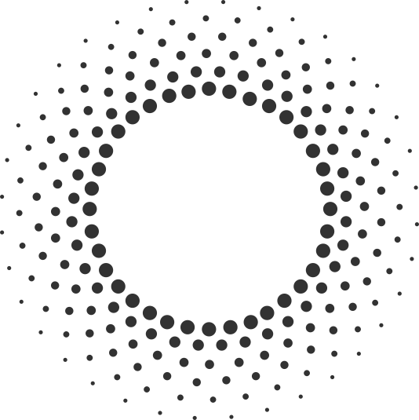
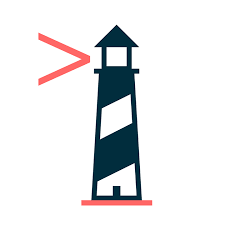
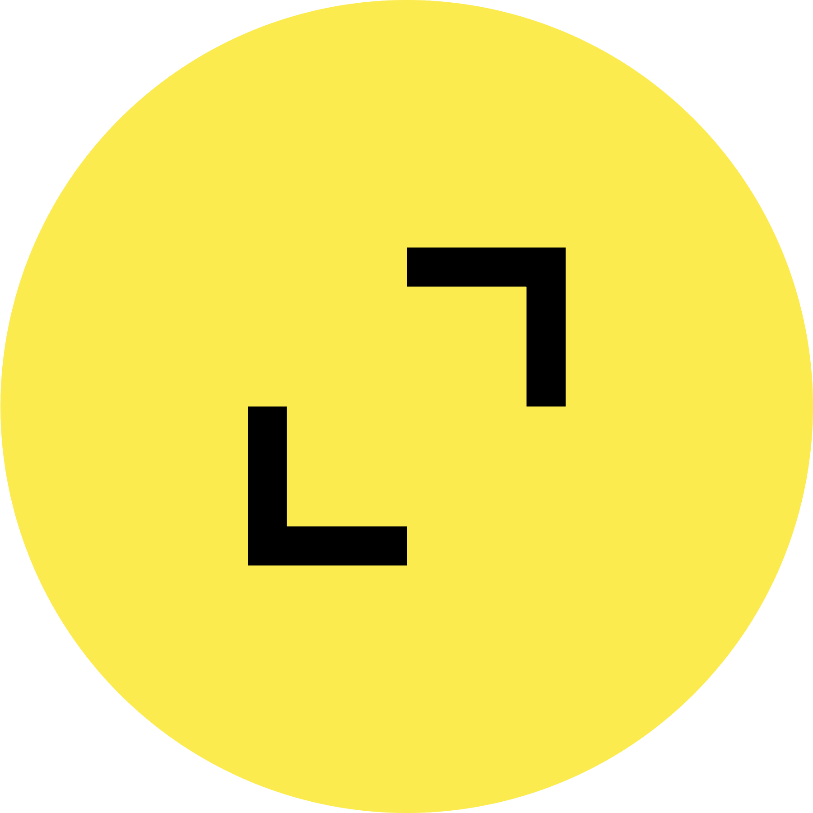

>About me
Hi! I'm Will.
I have been developing web and mobile applications professionally for about a decade. Some languages I typically use are TypeScript and Python. Some frameworks and libraries I have used extensively include React and NestJS. I also have experience with databases like Postgres, cloud platforms like AWS, writing CI/CD pipelines, and using Playwright for e2e testing.
- will.j.ginsberg@gmail.com
- github.com/wginsberg
Truthkeep.ai

Truthkeep is a software company building AI based applications for the semi-conductor industry.
I lead the development of two products:
- Social media insights platform: Ingests data from forums and social media sites and delivers AI analysis of customer sentiment and industry trends.
- Chatbot platform: A chatbot which can be embedded on our partner's websites and answer questions based on their product documentation and website contents.
My work at Truthkeep has involved writing complex RAG pipelines using LangGraph and techniques like document chunking, semantic search, and corrective retrieval.
1280 Labs
I have contributed to and lead various projects on a contract basis.
- AI applications: Built several applications using OpenAI and other LLM providers.
- Mobile apps: I contributed to the development of a React Native app
- Websites: I built and maintained websites with technologies like NextJS and Webflow
Lighthouse Labs

Lighthouse Labs was a coding bootcamp focused on teaching web development fundamentals. I provided one-on-one mentoring for dozens of students on their web development journey. Topics covered included HTML, CSS, clientside JavaScript, NodeJs, Postgres, Ruby on Rails, and testing.
Karat
I conduct technical interviews on the Karat platform. I have interviewed over 500 candidates on behalf of various companies.
Some of Karat's customers include Figma, Uber, Atlassian, PayPal, and Citi.
TribalScale

I built web and mobile applications for various clients including tech startups and fortune 500 media companies.
I learned a lot about React, NodeJs, test driven development, and delivering projects from 0 to 1.
Vouchr
I contributed to building Vouchr's e-greeting card SDK
Rubikloud (Acquired by Kinaxis)
I worked as an intern for 16 months at Rubikloud. The company was a Big Data startup focused on the retail industry. I spent time with four different teams:
Data Engineering
I used a tool called Talend to make data pipelines and investigated data quality issues.
Platform Team
We developed customer-facing web dashboards. I learned ReactJS and Java Spring Boot. This was my first time doing real web development and I loved it!
Data Science Engineering
I worked with Python to maintain data pipelines.
Rubicore
I used Scala to wrote pipelines utilizing HBase.
UofT Department of Computer Science
Research Assistant SummerI was an assistant for the Software Engineering Research Group at the University of Toronto. I wrote some Java and it didn't go very well.
University of Toronto
I studied Computer Science at the St. George campus, graduating with an Honours Bachelor of Science.
- Computer Science specialist
- Mathematics minor
- Focus in Web and Internet Technologies